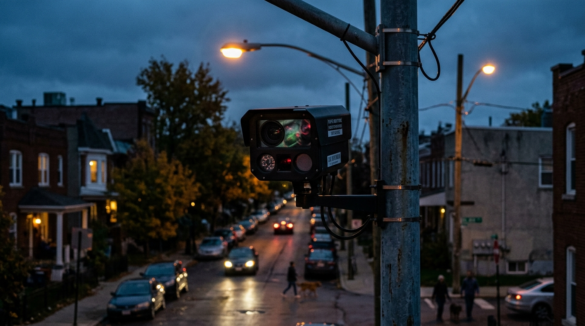
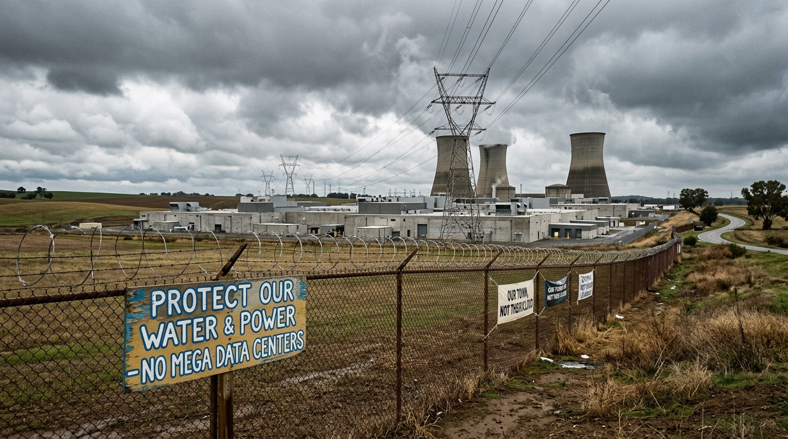
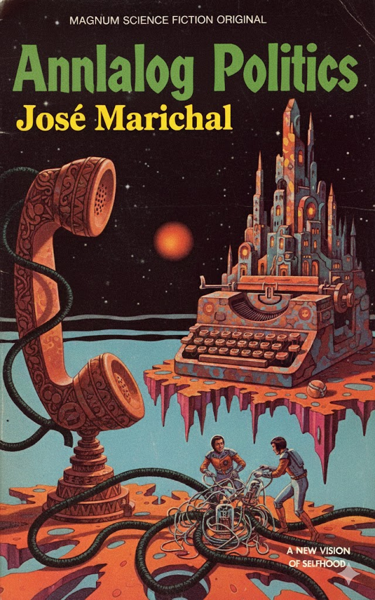

Civic AI Working Group
Civic Agency, Democratic Innovation & Critical Scrutiny
The Civic AI Working Group is an interdisciplinary research hub dedicated to examining how artificial intelligence is restructuring social, economic, and political institutions. We operate at the vital intersection of constructive civic innovation and critical inquiry. On one hand, our research investigates how agentic AI and computational tools can be harnessed to promote the common good—empowering undergraduates and community partners to build living civic infrastructure, advance participatory governance, and deepen public policy deliberation. On the other hand, we actively develop critical frameworks addressing the systemic costs of generative AI: from the unsustainable water and energy consumption of planetary-scale data centers, to extractive data colonialism, algorithmic surveillance, and the erosion of democratic agency.
In the working group, fellows learn to use coding agents to complete rigorous, participation-based research: building automated pipelines for legislative analysis, creating simulations to train policy entrepreneurs, and conducting empirical audits of algorithmic systems. Crucially, our goal is to actively connect people and complicate—rather than simply optimize—our understanding of civic life.
The Civic AI Working Group is convened by Dr. Jose Marichal. Students and collaborators interested in joining can contact him at marichal@callutheran.edu.

Flock Cameras in Low-Income Communities
An empirical investigation into the spatial concentration of automated license plate readers (ALPR) across Southern California. Examines how privatized surveillance infrastructure disproportionately monitors marginalized neighborhoods, generates automated suspicion networks, and reshapes municipal civil rights.

Rhetoric of Data Center Resistance
Critical discourse and policy analysis of grassroots civic resistance against hyperscale AI data centers. Investigating community mobilization over millions of gallons of daily cooling water, electrical grid strain, local tax abatements, and the physical material footprint of planetary AI compute.
Deepfake AI's Impact on Political Campaigns
Tracking and evaluating the weaponization of generative synthetic audio clones, hyper-realistic video manipulation, and autonomous persuasion dialogues in electoral contests. Audits the "liar's dividend", voter epistemic degradation, and legal/regulatory countermeasures for democratic integrity.
Technofeudalism and Political Resistance
Theorizing the transformation of digital capitalism into cloud-based technofeudalism. Analyzes how proprietary planetary compute and foundation models extract rent from civic institutions, while formulating strategies for political resistance: data cooperatives, public compute utilities, and open civic protocols.

Analog Politics
Can going analog become a social movement? Investigating tactile resistance, offline civic organizing, and theoretical alternatives to pervasive algorithmic mediation.
Unaccountable AI
Should we let AI go rogue? Interrogating runaway autonomous systems, institutional abdication of human discretion, and the democratic consequences of algorithmic delegation.
Techno-Pessimism
Are we better off not expecting too much from AI? A philosophical critique of techno-optimism and modern silicon salvation narratives in democratic institutions.
Pluralist AI
Can AI make democracy more, not less expansive? Exploring pluralistic alignment architectures, deliberative polling, and computational mechanisms designed for agonistic consensus rather than monocultural convergence.